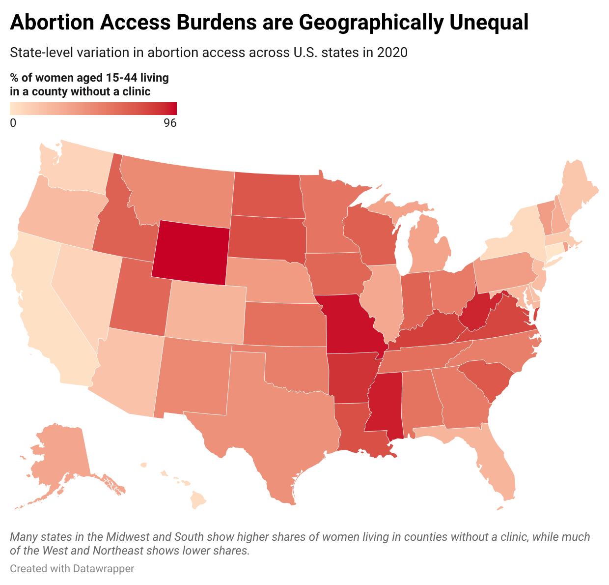
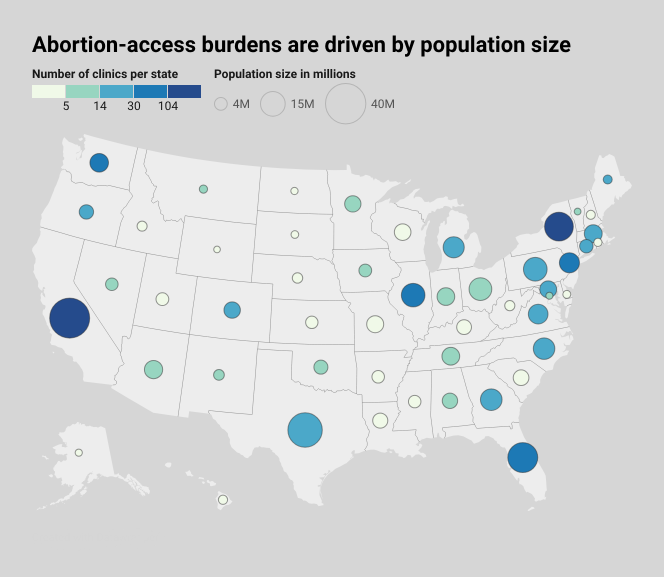

Proposition: Abortion-access burdens are geographically unequal.
FOR the Proposition
Abortion-access issues are subject to regional variation.

Design Decisions and Rationale:
- Score: -1 | Monochromatic red color scheme. We chose a monochromatic red choropleth since it made percentage differences easier to interpret while carrying subtle political associations. A red/blue diverging palette would have had much stronger and more distracting political connotations, whereas the red gradient kept the viewer's attention on variation in burden across states rather than on party affiliation. The single-hue scale also makes the darkest states (Wyoming, Missouri, and West Virginia) stand out naturally without needing additional annotation.
- Score: +1.5 | Descriptive caption guiding the viewer toward the regional pattern. We added a short descriptive caption at the bottom of the map to guide the viewer toward the regional pattern we wanted them to notice without altering any of the underlying data. It connects the title to the visual and reinforces the argument that the South and Midwest show consistently higher deprivation than the West and Northeast. We avoided a more detailed subtitle that might have been redundant with the legend or drawn attention away from the map itself.
- Score: +2 | Declarative title framing the map around burden rather than neutral state differences. The title "Abortion Access Burdens are Geographically Unequal" frames the visualization around uneven burden rather than simply describing state-level variation. The strong wording primes the reader to look for contrast and disparity before they have engaged with a single data point. An earnest alternative would have described the metric directly, but the declarative framing does rhetorical work that a neutral title would leave to the reader.
- Score: 0 | Light background with clear state outlines. We kept a light background and clear state outlines so the red gradient would be as readable and comparable as possible across states. This was primarily a legibility decision — we wanted a clean, readable map that let the colors do most of the rhetorical work rather than a busy background that might distract from the regional pattern. There is nothing deceptive or particularly persuasive about this choice on its own.
- Score: -0.5 | Population-based burden metric instead of raw clinic counts. We used the share of women aged 15–44 living in a county without a clinic rather than a raw clinic count to shift focus from infrastructure totals to affected people. While this metric is real and sourced directly from Guttmacher, choosing to highlight absence rather than presence is a subtle framing choice that benefits the "for" argument. A state like Wyoming looks far more deprived under this metric than it would under a clinics-per-capita ratio, since the deprivation percentage is driven partly by how sparsely populated and geographically large its counties are — meaning a woman might live 50 miles from a clinic in a neighboring county and still be counted as "without access." We considered using a per-capita rate instead, but the burden metric produced a starker and more persuasive regional pattern.
AGAINST the Proposition
Abortion-access burdens are driven by population size, not geographic region.

Design Decisions and Rationale:
- Score: +0.5 | Keeping the opposing visualization as a map rather than switching chart types. We kept the opposing visualization as a map rather than switching to a bar chart or scatter plot, primarily to make the two sides visually cohesive and easy to read in tandem. A bar chart could have shown the population-to-clinic relationship more precisely, but two geographic maps invite direct side-by-side comparison and signal that both arguments are operating on the same terrain. The choice is earnest as it prioritizes readability. It also subtly benefits the "against" argument by making the two visualizations feel like equal and symmetric interpretations of the same data rather than one being a rebuttal of the other.
- Score: +1 | Merging external Census population data into the Guttmacher dataset. The original Guttmacher dataset did not include state population figures, so we pulled 2020 U.S. Census estimates and joined them to the dataset to enable the bubble size encoding. This was a transparent and earnest data decision as the population figures are publicly sourced and accurately represented. The choice to introduce population as a variablemakes the "against" argument possible as it reframes low clinic counts as a population story rather than a geographic one.
- Score: -1 | Encoding total state population as bubble size so populous states dominate the visual field. We introduced total state population as the bubble size variable so that the most populous states like California, New York, Texas, and Florida would immediately catch the eye. Because those states also happen to have the most clinics, the visual impression is one of abundance concentrated where the most people live. Smaller interior states shrink into near-invisible pale dots, which makes their low clinic counts feel like a natural consequence of low population rather than a policy failure. A viewer's eye goes straight to the large dark circles, anchoring their interpretation before they have read any labels.
- Score: -1 | Coloring bubbles by raw clinic count rather than a burden-based measure. We colored the bubbles by the raw number of clinics per state rather than a per-capita or deprivation metric, because raw counts give a more infrastructure-focused impression and work in tandem with the bubble size encoding. When a viewer sees a large dark circle, they read it as "this state has a lot of people and a lot of clinics," which leads naturally to the conclusion that the proposition overstates regional inequality. A burden-based color scale would have complicated that reading by revealing that some large, populous states still leave significant shares of women without local access.
- Score: +0.5 | Calm blue monochromatic palette that frames clinic distribution as neutral and informational. We chose a light-to-dark blue gradient for the bubble color encoding because blue reads as calm and objective rather than urgent or alarming. The palette gives the map a data-forward, clinical feel that nudges the viewer toward treating clinic distribution as a straightforward infrastructure story rather than a crisis of access. A warmer scale would have made even moderate clinic counts appear insufficient or concerning. By keeping the tone visually neutral, the map implicitly signals that what you are looking at is simply how resources are distributed across a large and varied country, rather than evidence of systemic geographic inequality.
Final Reflection
The most surprising aspect of this project was how little we needed to fabricate in order to make both visualizations genuinely persuasive. Every number on both maps is accurate and drawn from the same Guttmacher Institute dataset, with the only external addition being publicly available 2020 Census population figures merged in for the "against" map. What changed between the two visualizations was the choices we made about which variable to encode, which color palette to use, how to aggregate, and what to write in the title. The "for" map uses a population burden metric, a white-to-red color scale, and a declarative title that asserts an inequality. These direct the reader toward a conclusion before they look at a particular state. The "against" map introduces population as a competing variable, uses a calm blue gradient, and encodes clinic counts as presence rather than absence, steering attention toward an opposing conclusion. Neither visualization misrepresents any individual data point, but they push toward strongly different takeaways. That experience made clear that accuracy at the level of individual facts is necessary but far from sufficient for ethical visualization.
The hardest part of the process was deciding how much persuasion was enough without crossing into something obviously manipulative. For the "for" map, the regional pattern in the deprivation metric is stark enough that almost any honest encoding would have been persuasive, so most of our additional choices, like the red palette and the assertive title, were reinforcements of a real signal rather than fabrications of a false one. The "against" map required more deliberate construction: we had to introduce a new variable entirely, choosing to merge in Census population data, and then select encodings that would make populous states visually dominate without technically misrepresenting anything. The population-bubble map works as a counter-argument precisely because its core claim that more people means more clinics has genuine face validity, making it hard to dismiss on first glance even though it sidesteps the more meaningful question of whether women in those states actually have local access.
We defined the line between acceptable persuasion and misleading visualization as we worked rather than in advance. Our earliest drafts used scatter plots and bar charts but those chart types made the argument too explicit and easy to pick apart or suffered from poor readability from over-plotting. Switching to maps forced us to make more nuanced choices: whether red or a neutral color did more work, whether a caption was guiding or manipulating, whether framing around burden felt honest or loaded. We landed on a working definition where a visualization is acceptable if the design choices amplify a pattern that genuinely exists in the data, and misleading if they manufacture an impression the data does not actually support. By that standard most of our choices fall in a gray zone. The red palette makes a real pattern feel more urgent than it might otherwise, and the population bubbles redirect attention toward a supportable but incomplete explanation. Neither feels outright dishonest, but neither is fully neutral either. That gray zone was harder to navigate than we expected and is where the true questions of persuasive, descriptive, and misleading come into play.